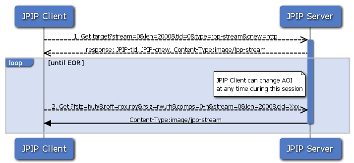
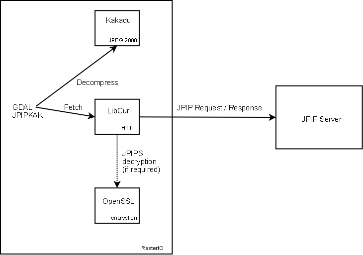
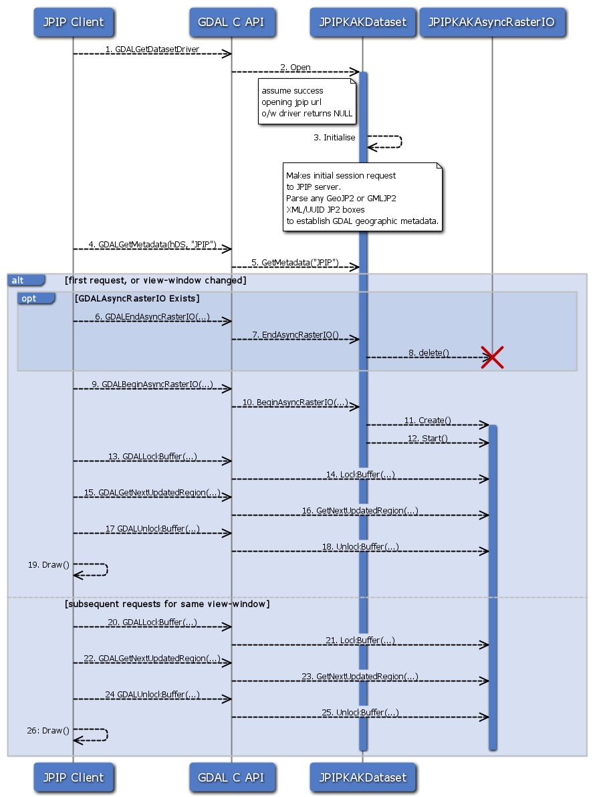

JPIPKAK - JPIP Streaming¶
Driver short name
JPIPKAK
Build dependencies
Kakadu library
JPEG 2000 Interactive Protocol (JPIP) flexibility with respect to random access, code stream reordering and incremental decoding is highly exploitable in a networked environment allowing access to remote large files using limited bandwidth connections or high contention networks.
Driver capabilities¶
Supports Georeferencing
This driver supports georeferencing
JPIPKAK - JPIP Overview¶
A brief overview of the JPIP event sequence is presented in this section, more information can be found at JPEG 2000 Interactive Protocol (Part 9 – JPIP) and the specification can (and should) be purchased from ISO.
{kind=link}
An earlier version of JPEG 2000 Part 9 is available here http://www.jpeg.org/public/fcd15444-9v2.pdf, noting the ISO copyright, diagrams are not replicated in this documentation.
{kind=link}
The JPIP protocol has been abstracted in this format driver, requests are made at the 1:1 resolution level.

Initial JPIP request for a target image, a target id, a session over http, data to be returned as a jpp-stream are requested and a maximum length is put on the response. In this case no initial window is requested, though it can be. Server responds with a target identifier that can be used to identify the image on the server and a JPIP-cnew response header which includes the path to the JPIP server which will handle all future requests and a cid session identifier. A session is required so that that the server can model the state of the client connection, only sending the data that is required.
Client requests particular view windows on the target image with a maximum response length and includes the session identifier established in the previous communication. ‘fsiz’ is used to identify the resolution associated with the requested view-window. The values ‘fx’ and ‘fy’ specify the dimensions of the desired image resolution. ‘roff’ is used to identify the upper left hand corner off the spatial region associated with the requested view-windw. ‘rsiz’ is used to identify the horizontal and vertical extents of the spatial region associated with the requested view-window.
JPIPKAK -approach¶
The JPIPKAK driver uses an approach that was first demonstrated here, J2KViewer, by Juan Pablo Garcia Ortiz of separating the communication layer (socket / http) from the Kakadu kdu_cache object. Separating the communication layer from the data object is desirable since it allows the use of optimized http client libraries such as libcurl, Apache HttpClient (note that jportiz used a plain Java socket) and allows SSL communication between the client and server.
Kakadu’s implementation of client communication with a JPIP server uses a socket, and this socket connection holds the state for this client session. A client session with Kakadu can be recreated using the JPIP cache operations between client and server, but no use of traditional HTTP cookies is supported since JPIP is neutral to the transport layer.
The JPIPKAK driver is written using a HTTP client library with the Kakadu cache object and supports optimized communication with a JPIP server (which may or may not support HTTP sessions) and the high performance of the kakadu kdu_region_decompressor.

JPIPKAK - implementation¶
The implementation supports the GDAL C++ and C API, and provides an initial SWIG wrapper for this driver with a Java ImageIO example (TODO - qGIS Example).
The driver uses a simple threading model to support requesting reads of the data and remote fetching. This threading model supports two separate client windows, with just one connection to the server. Requests to the server are multiplexed to utilize available bandwidth efficiently. The client identifies these windows by using “0” (low) or “1” (high) values to a “PRIORITY” metadata request option.
Note: SSL support
If the client is built with support for SSL, then driver determines whether to use SSL if the request is a jpips:// protocol as opposed to jpip:// . Note that the driver does not verify server certificates using the Curl certificate bundle and is currently set to accept all SSL server certificates.
Note: libCurl
JPIP sets client/server values using HTTP headers, modifications have been made to the GDAL HTTP portability library to support this.

GDALGetDatasetDriver
Fetch the driver to which this dataset relates.
Open
If the filename contained in the
GDALOpenInfoobject has a case insensitive URI scheme of JPIP or JPIPS theJPIPKAKDatasetis created and initialized, otherwise NULL is returned.Initialize
Initialization involves making an initial connection to the JPIP Server to establish a session and to retrieve the initial metadata about the image (ref. JPIP Sequence Diagram).
If the connection fails, the function returns false and the
Openfunction returns NULL indicating that opening the dataset with this driver failed.If the connection is successful, then subsequent requests to the JPIP server are made to retrieve all the available metadata about the image. Metadata items are set using the
GDALMajorObject->SetMetadataItemin the “JPIP” domain.If the metadata returned from the server includes GeoJP2 UUID box, or a GMLJP2 XML box then this metadata is parsed and sets the geographic metadata of this dataset.
GDALGetMetadata
C API to
JPIPKAKDataset->GetMetadataGetMetadata
returns metadata for the “JPIP” domain, keys are “JPIP_NQUALITYLAYERS”, “JPIP_NRESOLUTIONLEVELS”, “JPIP_NCOMPS” and “JPIP_SPRECISION”
GDALEndAsyncRasterIO
If the asynchronous raster IO is active and not required, the C API calls
JPIPKAKDataset->EndAsyncRasterIOEndAsyncRasterIO
The JPIPKAKAsyncRasterIO object is deleted
delete
GDALBeginAsyncRasterIO
C API to
JPIPKAKDataset->BeginAsyncRasterIOBeginAsyncRasterIO
The client has set the requested view window at 1:1 and have optionally set the discard level, quality layers and thread priority metadata items.
Create
Creates a JPIPKAKAsyncRasterIO Object
Start
Configures the kakadu machinery and starts a background thread (if not already running) to communicate to the server the current view window request. The background thread results in the
kdu_cacheobject being updated until the JPIP server sends an “End Of Response” (EOR) message for the current view window request.GDALLockBuffer
C API to LockBuffer
LockBuffer
Not implemented in
JPIPKAKAsyncRasterIO, a lock is acquired inJPIPKAKAsyncRasterIO->GetNextUpdatedRegionGDALGetNextUpdatedRegion
C API to GetNextUpdatedRegion
GetNextUpdatedRegion
The function decompresses the available data to generate an image (according to the dataset buffer type set in
JPIPKAKDataset->BeginAsyncRasterIO) The window width, height (at the requested discard level) decompressed is returned in the region pointer and can be rendered by the client. The status of the rendering operation is one ofGARIO_PENDING, GARIO_UPDATE, GARIO_ERROR, GARIO_COMPLETEfrom theGDALAsyncStatusTypestructure.GARIO_UPDATE, GARIO_PENDINGrequire more reads of GetNextUpdatedRegion to get the full image data, this is the progressive rendering of JPIP.GARIO_COMPLETEindicates the window is complete.GDALAsyncStatusTypeis a structure used byGetNextUpdatedRegionto indicate whether the function should be called again when either kakadu has more data in its cache to decompress, or the server has not sent an End Of Response (EOR) message to indicate the request window is complete.The region passed into this function is passed by reference, and the caller can read this region when the result returns to find the region that has been decompressed. The image data is packed into the buffer, e.g. RGB if the region requested has 3 components.
GDALUnlockBuffer
C Api to UnlockBuffer
UnlockBuffer
Not implemented in
JPIPKAKAsyncRasterIO, a lock is acquired inJPIPKAKAsyncRasterIO->GetNextUpdatedRegionDraw
Client renders image data
JPIPKAK - installation requirements¶
OpenSSL 0.9.8K (if SSL is required, a JPIPS connection)
Kakadu (tested with v5.2.6 and v6)
Currently only a Windows makefile is provided, however this should compile on Linux as well as there are no Windows dependencies.